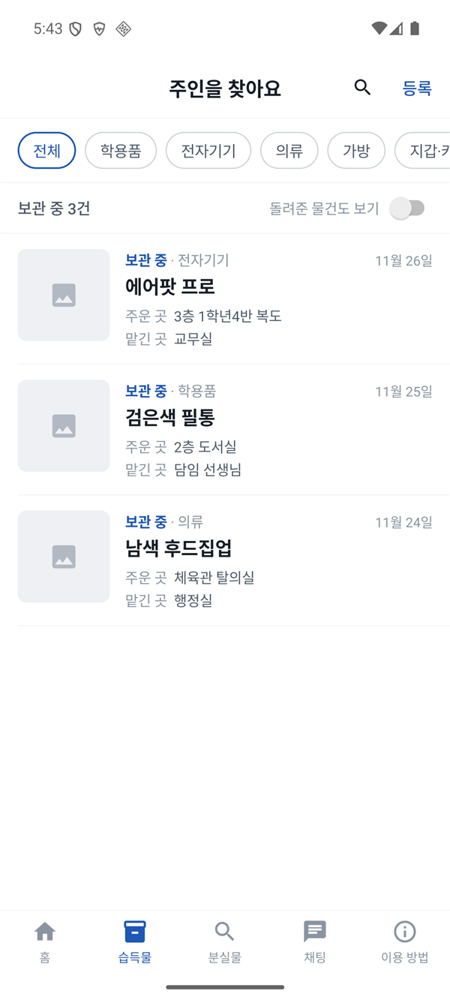
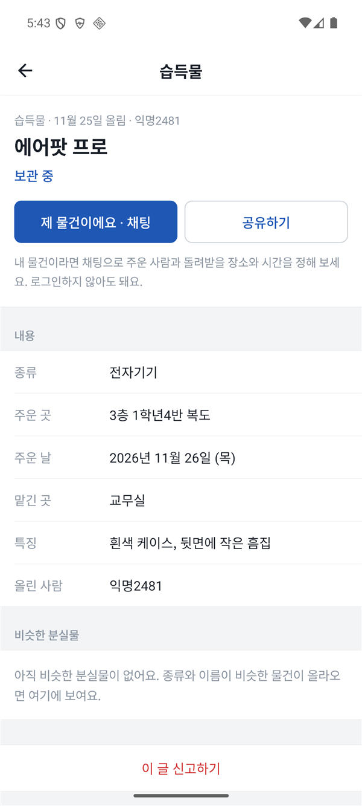
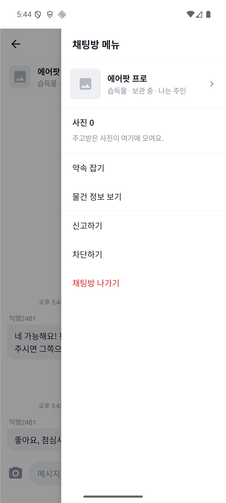

이런 걸 할 수 있어요

사진으로 올리고, 한눈에 찾기
주운 물건은 사진, 주운 곳, 맡겨 둔 곳을 적어 올려요. 목록에서 종류 버튼과 검색으로 내 물건을 빠르게 찾을 수 있어요.

주인과 바로 채팅
"제 물건이에요"를 누르면 주운 사람과 바로 대화가 열려요. 사진을 보내고, '약속 잡기'로 만날 장소와 시간을 정해요.

비슷한 물건을 알아서 보여 줘요
분실물을 신고하면 종류, 이름, 장소, 날짜가 비슷한 습득물을 상세 화면에서 바로 보여 줘요.

채팅방 메뉴로 안전하게
오른쪽 위 메뉴에서 주고받은 사진을 모아 보고, 돌려줌을 표시하고, 불쾌한 대화는 신고하거나 차단할 수 있어요.
설치하기
쓰고 있는 기기를 고르세요. 이 기기에 맞는 방법을 먼저 보여 드려요.
- 아래 APK 받기를 눌러 설치 파일을 받아요.
- 다운로드가 끝나면 알림이나 '내 파일 › 다운로드'에서 파일을 눌러요.
- '출처를 알 수 없는 앱' 안내가 나오면 설정을 눌러 이번만 허용하고 설치를 눌러요.
- 설치가 끝나면 열기를 눌러요. 로그인 없이 바로 쓸 수 있어요.
| 버전 | 2.0.4 |
|---|---|
| 파일 크기 | 약 3.0MB |
| 필요한 버전 | Android 6.0 이상 |
| 권한 | 인터넷 (카메라와 사진은 고를 때만 해당 앱을 열어 씀) |
| SHA-256 | - |
- Edge나 Chrome에서 이 페이지를 열어요.
- 아래 앱 설치를 누르고 설치 창에서 설치를 눌러요. 버튼이 없으면 주소창 오른쪽의 설치 아이콘(모니터 모양)을 눌러도 돼요.
- 시작 메뉴와 바탕화면에 '분실물 센터'가 생기고, 따로 된 창으로 열려요.
| 필요한 브라우저 | Microsoft Edge 또는 Google Chrome (Windows 10 이상) |
|---|---|
| 지우는 방법 | 앱 창 오른쪽 위 ⋯ 메뉴 › '앱 제거' |
| 업데이트 | 새 버전이 나오면 앱을 열 때 자동으로 바뀌어요. |
- Chrome이나 Edge라면 아래 앱 설치를 누르거나, 주소창 오른쪽 설치 아이콘을 눌러요.
- Safari(macOS Sonoma 14 이상)라면 메뉴 막대의 파일 › Dock에 추가를 눌러요.
- Dock과 Launchpad에 '분실물 센터'가 생기고, 따로 된 창으로 열려요.
| 필요한 브라우저 | Chrome, Edge 또는 Safari 17 이상 |
|---|---|
| 지우는 방법 | Dock에서 앱을 휴지통으로 끌거나, 앱 메뉴 › '제거' |
| 업데이트 | 새 버전이 나오면 앱을 열 때 자동으로 바뀌어요. |
- iPhone · iPad: Safari에서 이 페이지를 열고 아래 웹에서 열기를 눌러요.
- 화면 아래 공유 버튼(네모에서 화살표가 나오는 모양)을 누르고 홈 화면에 추가를 눌러요.
- 홈 화면의 '분실물 센터' 아이콘으로 앱처럼 열 수 있어요. 학교 컴퓨터에서는 설치 없이 웹에서 바로 써도 돼요.
| 주소 | - |
|---|---|
| 필요한 브라우저 | 최신 Safari, Chrome, Edge, Samsung 인터넷 |
이용 방법
물건을 잃어버렸다면
- '습득물' 탭에서 누가 이미 주워서 올려 두었는지 먼저 찾아봐요.
- 없으면 '분실물 신고'로 물건 이름, 종류, 잃어버린 장소와 날짜를 적어 올려요.
- 내 글 아래 '비슷한 습득물'을 가끔 확인해요.
- 내 물건 같으면 '제 물건이에요 · 채팅'으로 주운 사람과 약속을 잡아요.
- 돌려받았으면 내 글에서 '찾았어요'를 눌러요.
물건을 주웠다면
- 귀중품은 먼저 담임 선생님이나 교무실에 맡겨요.
- '습득물 등록'에서 사진을 찍고, 주운 장소와 맡겨 둔 곳을 적어 올려요.
- 주인이 채팅을 보내면 '채팅' 탭에 빨간 점이 생겨요.
- 돌려줬으면 '주인에게 돌려줬어요'를 눌러요.
| 개인정보 | 전화번호, 주소, 학번은 글이나 채팅에 쓰지 마세요. 사진에도 얼굴이나 이름표가 나오지 않게 찍어 주세요. |
|---|---|
| 만날 때 | 교무실 앞처럼 사람이 많은 학교 안 장소에서 만나요. |
| 불쾌할 때 | 채팅방 오른쪽 위 메뉴에서 신고하거나 차단할 수 있어요. 글은 상세 화면 맨 아래에서 신고해요. |
| 저장 | 올린 물건과 채팅은 Google Firebase 서버(서울)에 저장돼요. 물건 글은 앱을 쓰는 사람 누구나 볼 수 있어요. 채팅은 대화하는 두 사람이 보고, 괴롭힘이나 사기를 막기 위해 운영자도 모든 대화를 확인할 수 있어요. |